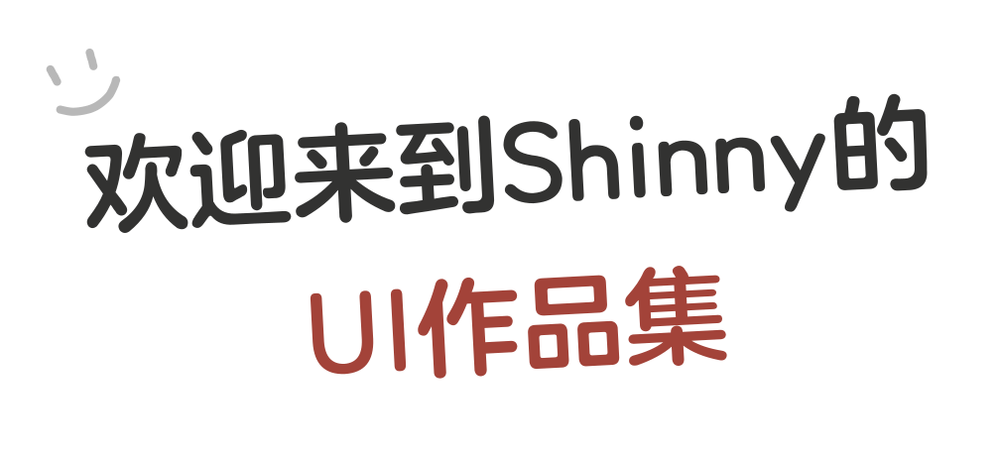
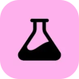
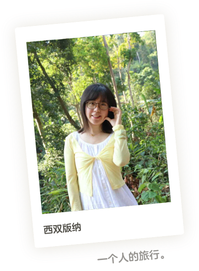
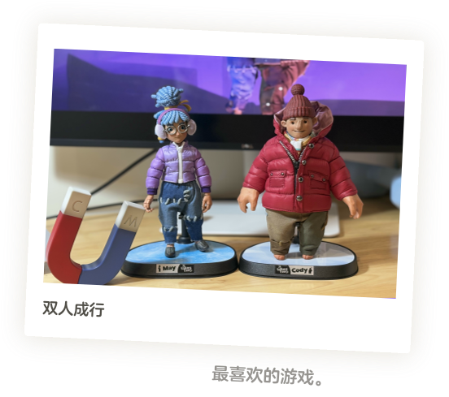
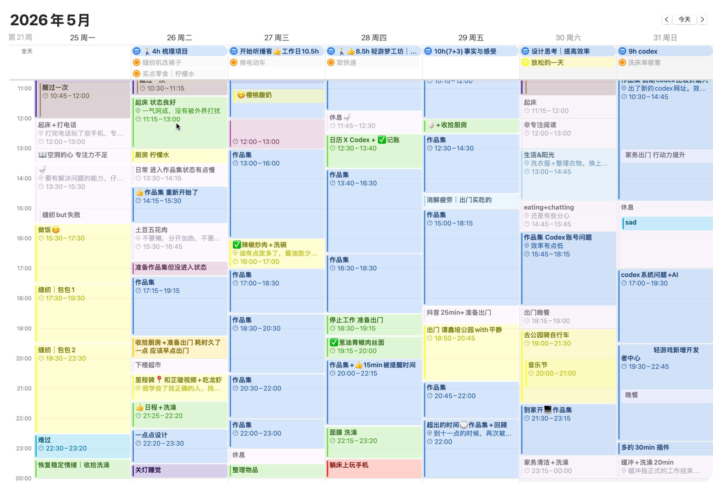
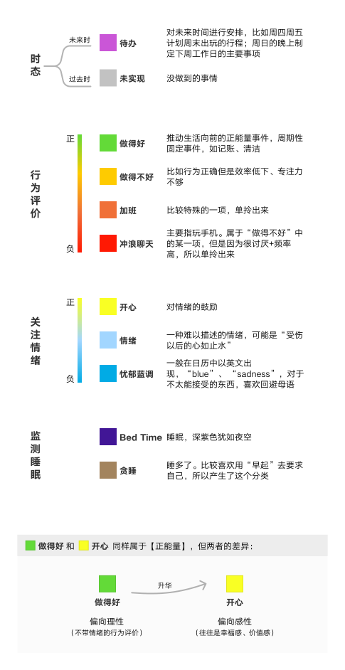
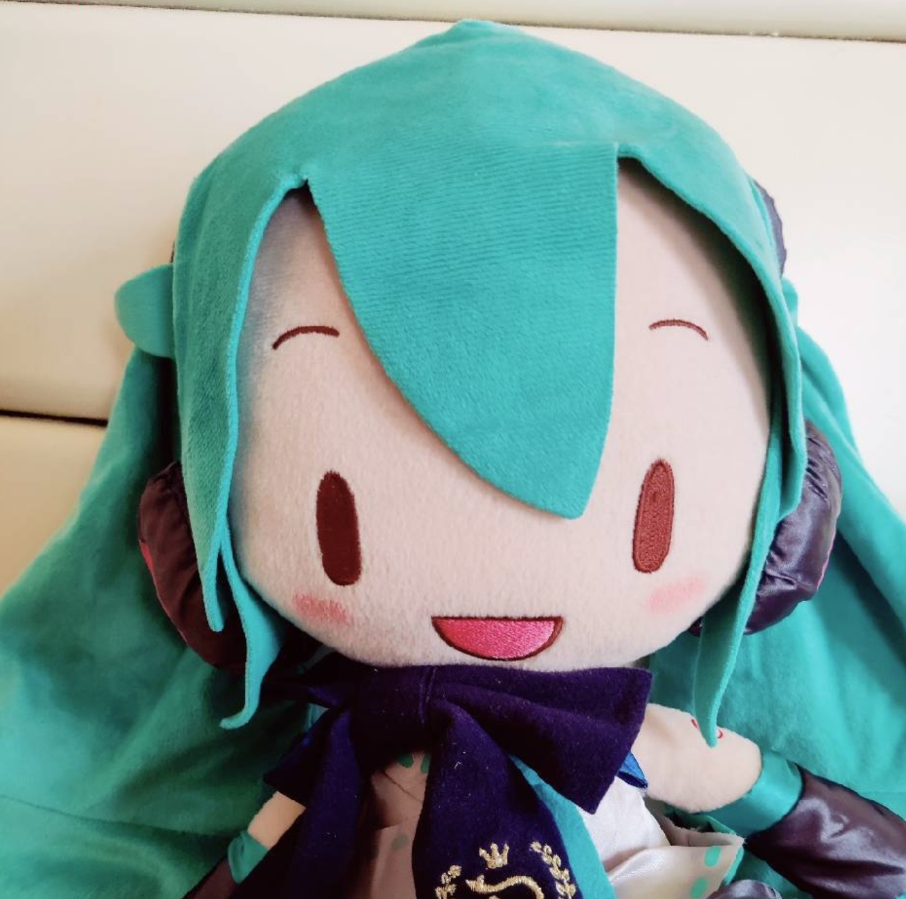
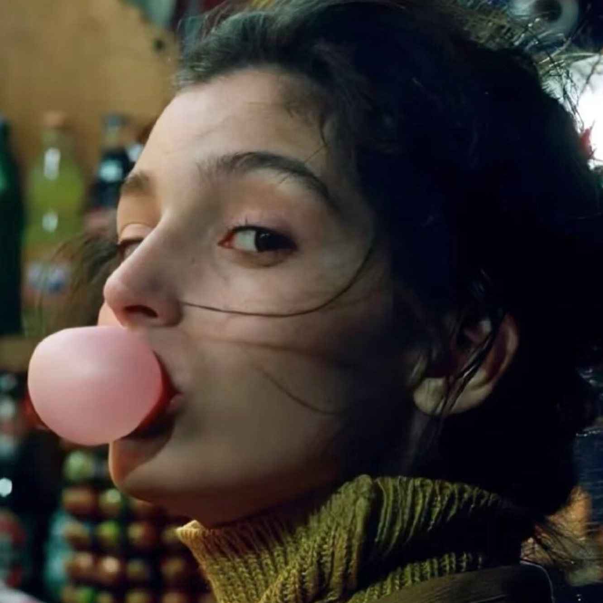

我与设计
从能力、工具、流程到协作经历，用更立体的方式介绍我如何工作。
我的工具箱
Software
Figma
ChatGPT
Codex

Stitch
Claude Design
Deepseek
AI时代的设计工作流
AI 时代人定义方向，AI加速过程，设计师完成体验落地。
输入与目标
整理设计灵感、需求文档、竞品参考与素材网站，形成清晰上下文。
BriefAI思考拓展
与 DeepSeek 多轮对话，完成竞品分析、用户路径和产品架构梳理。
Strategy生成原型素材
生成低保真、高保真、场景图、图标、组件素材和风格 Prompt。
Prototype设计实现
设计师在 Figma 中整合方案、统一视觉体验，完成正式设计稿。
Design开发与走查
开发实现后进行设计走查，检查还原度、交互细节并反馈迭代。
Delivery我的作品

生活里的我
极简主义者
我的一平米厨房，做饭只放油和生抽。简单的材料、固定的流程，也能过得很有秩序。




自我生活的管理者
用 Apple 原生 APP 的日历、账单、周复盘和日记，打造程序化又温柔的日常系统。


感谢 codex 支持我编写个人网站
感谢 Figma 永恒的陪伴
感谢 GPT 作为我设计上的朋友
感谢

感谢

感谢 Joy 的精神支持
感谢看到这里的你